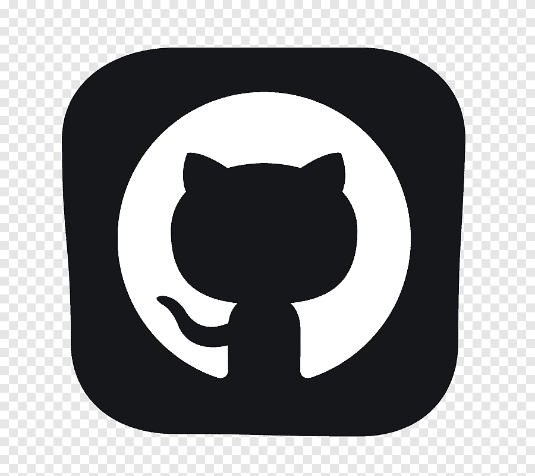

Тема: використання в сценаріях javascript бібліотек крос-браузерних інтерфейсів методів dom. Бібліотека Jquery Ui. Засоби налагодження і тестування сценаріїв javascript.
Мета: придбати практичні навички роботи jQuery UI, вміти додавати до сайту динамічні елементи цієї бібіліотеки, плагін галереї UniteGallery, кнопки соціальних мереж, інформери та інше.
Постановка задачі: головним завданням даної лабораторної роботи є ознайомлення з використанням в сценаріях JavaScript бібліотек крос-браузерних інтерфейсів методів dom та бібліотеки jQuery UI.
Теоретичні знання необхідно закріпити практичним виконанням завдань, як-от додавання до сайту динамічних елементів, плагіну галереї UniteGallery, кнопки соціальних мереж, інформерів та модулів jQuery для мультимедіа.
Після виконання вищеперелічених завдань необхідно запустити опрацьований документ у браузері для перевірки та переконатися, що все працює коректно.